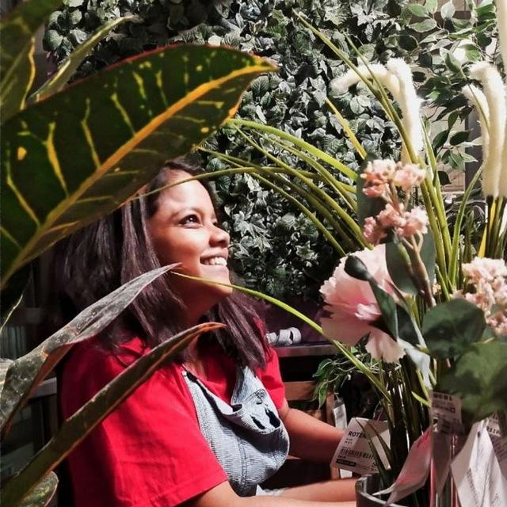

Artist Statement
I am a bay area artist of South Indian heritage who works primarily with oil paint. I love working with oil since it's patient and unhurried, and that slowness is part of why I make art. It helps me capture moments that feel meaningful to me.
Most of my work begins with memory. Childhood snapshots, faces from my family, places from my life, the small ordinary moments that felt significant even when I couldn't say why. I paint people with South Indian features. Dark brown skin, dark hair. That representation matters to me. When I moved from Indian to the US, a huge part of my life was left behind. I feel like I don't entirely belong in either place. I take inspiration from my past and my present to create work that helps me reclaim my space in my own terms and preserve my stories. I want to help find the joy in existing between spaces and stories, not entirely here nor there but yearning for both.
The paintings I create sits in the huge conversation of representation and belonging in contemporary art. Who gets to be a subject, whose memories are considered worth painting, whose features are rendered in common work? I want to expand the representation to include South Indian bodies and memories as well.
Education
- 2023
- Graduate Certificate in New Media, Berkeley Center for New Media, University of California - Berkeley
- 2023
- Master of Design, University of California - Berkeley
Group Exhibitions
- 2026
- Tiny Work, Pence Gallery, Davis, CA
- 2026
- Portraiture, Hammer2 Gallery, San Jose, CA
- 2026
- Blooming into Being, South San Francisco Cultural Arts Commission, South San Francisco, CA
- 2026
- Under Many Moons, Sebastopol Center for the Arts, Sebastopol, CA
- 2026
- Overtime: The Work of Living, genARTS, CA
- 2026
- Free to be ... me, South San Francisco Cultural Arts Commission, South San Francisco, CA
- 2026
- Diversity Lives Here: Roots & Routes, Monmouth University, NJ
- 2026
- Hold Fast, Works/San José, CA
- 2026
- Worn, Pence Gallery, Davis, CA
- 2025
- Catharsis, School of Art and Culture, Mexican Heritage Plaza, San José, CA
- 2025
- Reminiscence, Edgewater Gallery, Fort Braggs, CA
- 2025
- Stand Up!, Works/San José, CA
- 2025
- Diversity Lives Here: The Spirit of a Femininomenon, Monmouth University, NJ
Community Auctions
- 2026
- Art Auction, Pence Gallery, CA
- 2026
- Community Art Auction, Works/San José, CA
- 2025
- North Star Gala, Sebastopol Center For the Arts, CA
- 2025
- Stellar Radiance, Museum of Northwest Art, WA
- 2025
- Community Art Auction, Works/San José, CA
Awards and Residencies
- 2026
- Centrum Artist In Residence, Fort Worden, Port Townsend, WA
- 2026
- Runner Up, City of South San Francisco Cultural Arts Commission Art Show, CA
- 2025
- Honorable Mention Award, Reminiscence, Edgewater Gallery, Fort Braggs, CA
- 2024
- Interaction Design Award Finalist, IxDA
- 2023
- John L. Simpson Fellowship, UC Berkeley, CA